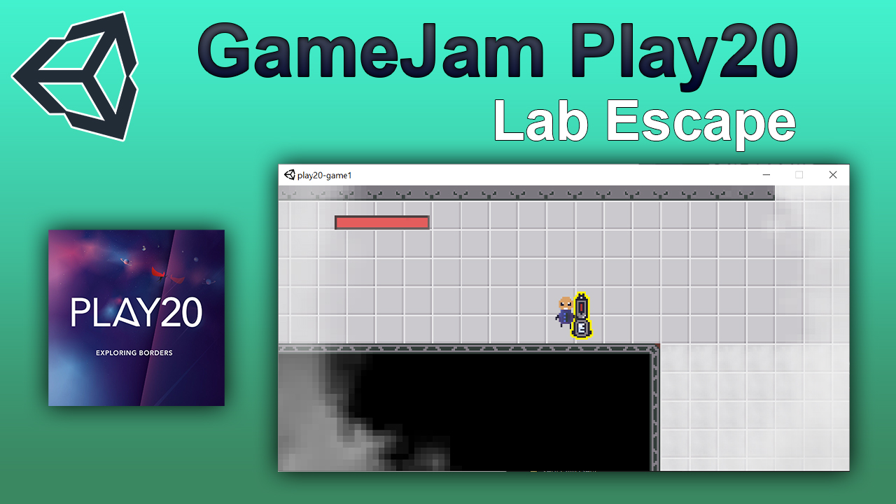

Le theme de cette GameJam etait "Exploring borders". Avec Elie Steidle nous avons décidé d'un jeu où l'on essaie de s'echapper d'un laboratoire enfumé. La fumée nocive cachait le décor, purifier l'air découvrait la carte petit à petit, d'où "exploring borders".
Le jeu devait etre constitué de plusieurs niveaux mais des circonstances imprevues ont ralenti le developpement. Nous avons quand meme reussi à finir un niveau, bien que vide.
Logiciels, systèmes et langages utilisés
| Logiciels | Langages | systèmes |
|---|---|---|
|
- Visual Studio Community 2019 - Unity - Aseprite |
- C Sharp | - Git |